EMERALD TABLETS
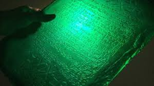
Introduction
The Emerald Tablet, also known as the Smaragdine Tablet (Tabula Smaragdina), is a brief and cryptic text traditionally attributed to the legendary Hellenistic figure Hermes Trismegistus. The oldest extant versions are four Arabic translations preserved in mystical and alchemical treatises dating between the 8th and 10th centuries AD—most notably in the works Sirr al-Khalīqa (The Secret of Creation) and Sirr al-Asrār (The Secret of Secrets). The text is frequently accompanied by a frame story describing the discovery of the emerald slab within the tomb of Hermes, serving as a "source code" brought forth from the earth to enlighten human consciousness.
The origins of the Emerald Tablet have been traced back as far as the biblical Genesis, though most scholars attribute it to Hermes Trismegistus, whose name signifies "Thrice Greatest Hermes" or "Ruler of the Three Worlds." It is now impossible to separate the historical personage from the legends identifying him with Thoth, the Egyptian god of learning and magic and the inventor of numbers and science. Alexander the Great is said to have discovered the Tablet at the tomb of Hermes in Phoenicia, while Wilhelm Kriegsmann relates a legend that Sarah, the wife of Abraham, stumbled upon the Tablet in a cave near Hebron, prying it loose from the stiff fingers of a mummified corpse.
The Emerald Tablet calls itself "the philosophy of the entire universe," and perhaps that is the most fitting title. However, it was never the nature of scholars to reveal the significance of their work or to offer such a clear and enticing prize to the uninformed. The original version was probably called the "Tabula of Smaragdina" because it was indeed such a thing: a green stone tablet. It is likely that the first Greek translation and the first revision bore the same name, to keep its material and spiritual essence hidden from the eyes of the uninformed.
History
GREEK
The Emerald Tablet is a brief and cryptic Hermetic text, regarded as a foundational pillar by both Muslim and European alchemists. Although attributed to the legendary Hellenistic figure Hermes Trismegistus, its earliest recorded appearances are found in Arabic sources dating back to the late 8th or early 9th century. Following its translation into Latin during the 12th and 13th centuries, it became the "hidden constitution" from which sages of both East and West derived the laws of transmutation of matter and spirit.
Variations of the discovery myth, particularly in the text "Secretum Secretorum" (attributed as a letter from Aristotle to Alexander the Great), speak of alchemy and magic. Author Dennis William Hauck proposes that Alexander the Great discovered a treasure-laden tomb in Siwa Oasis during his Egyptian expedition, which contained the legendary Emerald Tablet. To safeguard these sacred objects during times of unrest, Alexander allegedly reburied them in the tomb that Balinas (Apollonius of Tyana) would later uncover, ensuring that this primordial wisdom remained hidden from the unworthy.
Hauck claims the tablet was on display in Egypt, and a traveler described it:
It is a precious stone, like an emerald, whereon these characters are represented in bas-relief, not engraved. It is esteemed above 2,000 years old. The matter of this emerald had once been in a fluid state like melted glass, and had been cast in a mold, and to this flux the artist had given the hardness of the natural and genuine emerald by his art.
In the Orphic tradition, associated with the semi-mythical figure of Orpheus and cosmic mysteries, we find a profound resonance with the Emerald Tablets. Mystical accounts suggest that Orpheus's wisdom was not merely oral, but was engraved on tablets that preserved the "Laws of the Universe." The Orphics held a sovereign belief: "Divine truth must be preserved in a pure, incorruptible substance." This concept perfectly aligns with the symbolism of emerald, which embodies both immortality and frequential purity, ensuring the "Cosmic Program" remains shielded from physical decay or ionization.
In later esoteric traditions, the enigmatic philosopher Apollonius of Tyana (1st century AD) is depicted as a primary "recipient" of ancient sovereignty. Legend tells that he discovered ancient pillars or tablets buried in a secret chamber, containing knowledge from antediluvian civilizations (Atlantis and Lemuria). Alternative historians link these finds to the concept of a "Green Stone" bearing the "Wisdom of the Ancients," suggesting that Apollonius discovered not mere texts, but "data storage units" that survived the Great Deluge to broadcast their frequency into the first century of the common era.
EGYPT
The history of the tablets translated in the following pages is strange and profound, far surpassing the belief of modern scientists. Their antiquity is staggering, dating back to approximately 36,000 B.C. The author is Thoth, an Atlantean Priest-King, who established a colony in ancient Egypt following the sinking of his "Motherland" (Atlantis). These tablets were designed as a "time capsule" carrying the secrets of sovereignty and immortality throughout the ages, defying all attempts at erasure or oblivion.
The Emerald Tablets of Thoth the Atlantean have served as a pivotal text, inspiring generations of truth-seekers since their publication in the 1930s. The book is uniquely narrated from the perspective of Thoth himself, recounting his past life in Atlantis, its subsequent fall, and his achievement of immortality through the mastery of the secrets of life and death. It is said that Thoth didn't merely transplant this knowledge to Egypt but hid these secret teachings within "protected chambers" and guarded vaults, preserved by his devoted disciples and priests to ensure that "frequential sovereignty" remained accessible only to the worthy
In this incarnation, Thoth left the writings known to modern-day occultists as the "Emerald Tablets," which are but a later and far inferior interpretation of the true ancient secrets. The tablets translated in this work are the Ten Original Tablets left in the Great Pyramid under the guardianship of the pyramid priests. These ten tablets have been divided into thirteen parts for convenience of reference, representing the complete blueprint of consciousness sovereignty and the transmutation of matter from the heart of Giza’s greatest "energetic engine."
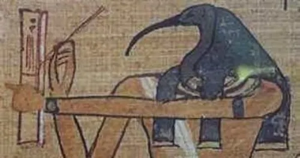
He was known to the Egyptians as Thoth/Tehute or Yehuti. Thoth is claimed on the Emerald Tablets as one of the survivors of Atlantis. He was the god of alchemy, magic, mathematics, and sacred writing, and was often depicted as a man with the head of an ibis or a baboon. The Egyptians even mummified real ibises and baboons in connection with Thoth. The worship of Thoth likely began in Lower Egypt during the Predynastic Period (c. 6000–3150 BCE) and continued through the Ptolemaic Period (323–30 BCE), the last dynastic period in Egyptian history, thus cementing Thoth's place as one of the longest-standing deities in Egyptian history, and indeed among all deities in any civilization. His name was frequently borne by Egyptian kings (such as Thutmose – "Born of Thoth"), scribes, and priests. He is usually depicted as a seated man with the head of an ibis or a baboon, with or without a lunar disk above his head. (Encyclopedia of Ancient History)
In the Emerald Tablet texts, Thoth recounts the pivotal moment of sovereignty: "I gathered the children of Atlantis, bringing to my spaceship all my records and tools of great magic (technology). I buried my ship deep within the rocks and erected above it a sign in the form of a Lion with a human face (The Sphinx), to serve as the guardian of my secret. Know that in the distant future, invaders will come from deep space; then, the wise must awaken, retrieve my ship from the depths of the pyramid I built, and easily conquer the challenges to reclaim the Earth." This is a coded message transcending time, using emerald as its vessel to ensure the warning survives.
MAYA
The migrant priests from Egypt settled in South America, bearing the "Emerald Tablets" which served as the primary catalyst for the development of the Maya civilization. This influence is evident in the striking similarities between the monuments of both cultures, from step pyramids to the worship of deities representing cosmic forces. By the 10th century, as the Maya established themselves in Yucatán, the tablets were placed in a sovereign location beneath the altar of a great temple dedicated to the Sun God. Following the Spanish conquest, these cities were abandoned, and the treasures of the temples—including the tablets—fell into oblivion, awaiting the restoration of their frequency.
ARABE
The Emerald Tablet has been found in various ancient Arabic works in different versions. The oldest version is found as an appendix in a treatise believed to have been composed in the 9th century, known as the Book of the Secret of Creation. This text presents itself as a translation of Apollonius of Tyana, under his Arabic name Balînûs. Although no Greek manuscript has been found, it is plausible that an original Greek text existed. The attribution to Apollonius, though false (pseudonymous), is common in medieval Arabic texts on magic, astrology, and alchemy.
Theories
A famous legend tells that the Emerald Tablet was discovered in a hidden tomb beneath a statue of Hermes in the ancient city of Tyana, held in the hands of Hermes Trismegistus—the legendary figure who unified ancient Egyptian and Greek wisdom. It is said that this tablet contained great knowledge, representing the vital link between humanity and spirituality. These secrets were entrusted to Hermes to serve as the "Cosmic Archivist," tasked with preserving and transmitting them to mankind as a blueprint for their spiritual and sovereign evolution.
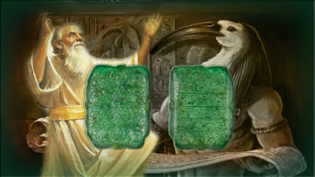
There are those who say that the Emerald Tablet is an ancient magical tool (like a magic tablet or disk). It is depicted as a mysterious and powerful thing that grants supernatural abilities (such as mind reading, telepathy, and telekinesis), and is used in a mission to save the world from danger. Time travel and hidden worlds. The Emerald Tablet is made of a meteorite, and that there is a famous meteorite that came from a solar system in the Book of the Great Hunter.
After extensive and painstaking research into the history of the Emerald Tablet, it was discovered that a revised Greek translation of the original text was issued around 300 BC. This translation was performed by three Alexandrian alchemists, who attempted to use the mysterious tablet to unify conflicting Jewish, Greek, and Egyptian versions of alchemy. Their goal was to establish a "unified frequential language" that bridged prophetic wisdom, Greek philosophy, and ancient Egyptian magic under the umbrella of "Emerald Sovereignty."
There is a profound belief among master alchemists that the texts of the Emerald Tablet are not merely philosophical, but the "practical foundation" for obtaining the Philosopher’s Stone—the cosmic catalyst capable of transmuting base metals (dust) into pure gold. From the perspective of the "Electric Universe," the Philosopher’s Stone represents a "high-frequency protocol" that reconfigures the atomic structure of matter, transforming "dead data" (dust) into "sovereign data" (gold) by synchronizing the resonance between "that which is above and that which is below."
We are told by Jewish sources such as the writer Eupolemus, who wrote about 150 BC, that the alphabet was invented by Moses while, according to Greek sources, the same alphabet was invented by Hermes. The Egyptian Hermes -- whom they called “Thoth” -- is credited with inventing hieroglyphic writing while the Babylonian Hermes, whom they called “Nebo,” is credited with inventing cuneiform writing. Nebo, a word that means the “Prophet,” was a common nickname for Moses, and when Moses died he was buried upon Mount Pisgah which is also called, no doubt in memory of Moses, Mount Nebo.
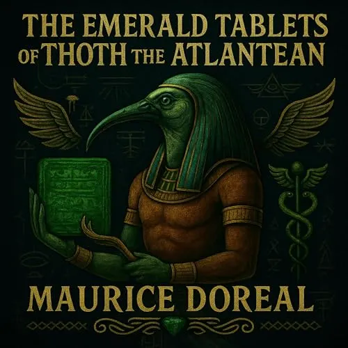
In the late 1940s, Maurice Doreal published his controversial work, The Emerald Tablets of Thoth the Atlantean, claiming to have discovered tablets written by Thoth in Giza during the 1920s. The profound twist in Doreal’s narrative is that Thoth was not a mere myth or deity, but an immortal being who survived the cataclysmic sinking of Atlantis. Settling in Egypt, he became the "Primal Architect" who transplanted the seeds of wisdom and advanced technology to humanity, transforming Earth into a laboratory for consciousness and cosmic sovereignty.
The book "The Emerald Tablets of Thoth of the Atlantis" was written by Maurice Durial, founder of the esoteric Brotherhood of the White Temple, in 1939. Durial claimed to have extracted ancient wisdom from Thoth himself, found on 15 tablets, and compiled it into a book. Among Durial's claims were the Atlanteans' ability to turn sand into gold and a technique that allowed them to create clothing simply by drawing a picture of any desired item.
According to legend, certain pyramid priests carried the Emerald Tablets as sacred talismans, through which they could exert authority derived from Thoth himself. These tablets were used to exercise sovereignty over the less advanced priestly crafts of other Atlantean descendant colonies. This specific group of tablet-bearing priests migrated to South America, where they encountered the thriving Maya nation, who still remembered much of the ancient wisdom. This migration established an energetic bridge linking the wisdom of the East (Egypt) with the secrets of the West (the Maya).
According to this, a meteorite landed in Shambhala, or the Tibetan region, years ago. It was called the Shambhala Stone, or the Chintamani Stone. The meteorite was split into three pieces by the Shambhala leaders, which were then called the Keys of Shambhala. The keys were placed in secret locations around the world. The stone was green. It was called the Shambhala Stone, or the Chintamani Stone.
There are those who say that the words of God were revealed to Adam in India or Tibet through emerald stones that came down from the sky.
Other sources allege that Hermes was the son of Adam and that he discovered the Tablet in a cave while traveling in Ceylon (modern-day Sri Lanka). Alternatively, some traditions claim it was found in an underground chamber within the Pyramid of Cheops. Most accounts describe the Tablet as a green-colored stone featuring raised, bas-relief lettering in the ancient Phoenician alphabet, serving as a "physical reservoir" of wisdom that defies decay and the passage of time.
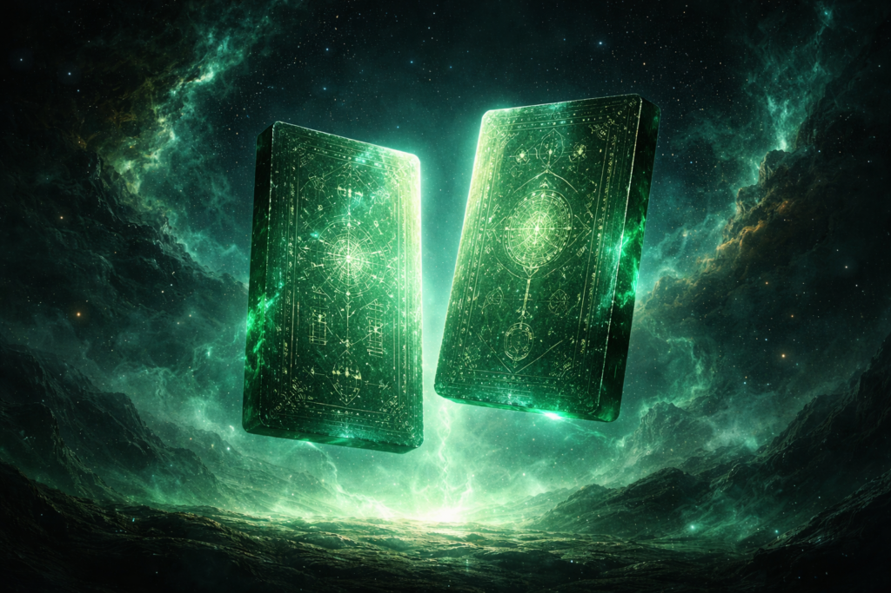
When we speak of the "Emerald Tablets," we are in fact discussing a legacy attributed to one of the most ancient sages: the prophet Idris (Enoch), who is traditionally recognized as the first to write with a pen. Idris excelled in astronomy, medicine, and mathematics, and delved deep into the frequency-based secrets of letters. Thus, it was only natural for divine wisdom to be revealed to him, augmenting the legacy of his grandfather Adam, thereby creating a comprehensive "Emerald Database." The purpose was to establish a cosmic reference so profound that no human could pose a question without receiving an answer of "absolute dazzle," ensuring the response always matched the level of divine sovereignty and renewed consciousness.
Deep traditions suggest that the Emerald Tablets are none other than the "Scrolls of Idris" (Enoch), representing the total sum of the knowledge he transmitted to the land of Egypt following the sinking of Atlantis (or just before the Great Deluge). It is believed that this knowledge, acting as the "Civilization Operating System," was deposited in highly strategic locations: either within the secret chambers of the Great Pyramid (as an energy core) or in the depths of the ancient Library of Alexandria (as an information repository). The objective was to safeguard the "Human Source Code" from total extinction beneath the waves of cosmic purification.
In Islamic tradition, the Prophet Idris (Enoch) is revered as the first human to write with a pen, establishing him as the original founder of humanity’s wisdom archiving system. This resonates deeply with the Quranic verse: "Read! And your Lord is the Most Generous. Who taught by the pen. Taught man that which he knew not". This divine decree confirms that teaching "by the pen" is a supreme gift to transcend the limitations of human memory. Idris/Thoth utilized writing not merely as a recording tool, but as a "sovereign instrument" to preserve "Green Knowledge," ensuring that the "Secret of Creation" survived through generations, even amidst the most profound cosmic purifications.
Many scholars and Sufi interpreters believe that the "Emerald Tablets" encapsulate the principles of creation and the divine laws that govern it, emphasizing the Oneness of God (Tawhid). The famous axiom, "As above, so below," finds its ultimate meaning within the framework of Monotheism; it reflects the perfect harmony between the Divine Command and celestial laws (above) and their manifestation within creation in the material world (below). Everything in existence, from the smallest atom to the vastest galaxy, is governed by the single Will of Allah, rendering the universe a "mirror" that reflects the greatness of the Creator and the unity of His governance.
One might wonder: why emerald specifically? Here, a striking and pivotal idea emerges regarding material sovereignty. Throughout history, emerald has been associated with absolute clarity, immortality, and a unique capacity to connect with the spiritual realm. Therefore, it was not merely an aesthetic choice, but the perfect vessel—both technically and spiritually—to preserve the secrets of ancient wisdom. As a substance that does not age and remains unaffected by material noise, it ensures that the "Source Code" remains as pure as the moment it was first engraved.
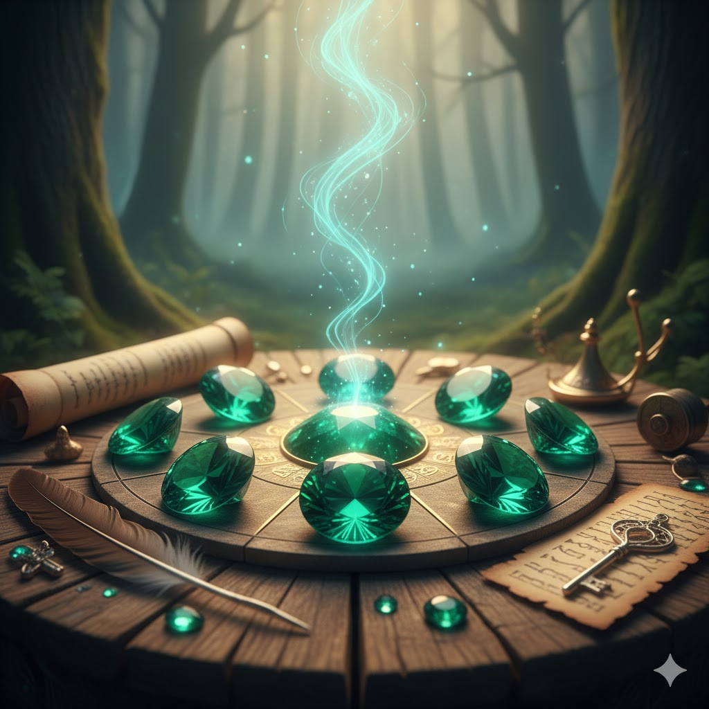
With the passage of time, the Emerald Tablets have become a symbol of "Green Knowledge" that never withers, as if they were designed with supreme intelligence to remain a living testament to a lost civilization that knew far more than we do today. Through this sovereign medium, the "Emerald Tablets" transformed into a "Cosmic Bridge" connecting humanity to what lies beyond the perceived world, turning mystery into certainty and matter into spirit, ensuring the Emerald Code remains the ultimate guide for seekers of absolute truth.
According to Armando Mei, Thoth codified his profound knowledge into 42 Emerald Tablets, each containing symbols and equations representing the supreme scientific principles governing the universe and nature. These tablets functioned as "Cosmic Instructions," providing a precise blueprint for the interaction of universal elements, ranging from fundamental natural forces to subtle spiritual energies. They constitute the "Universal Algorithm" that synchronizes the mechanics of matter with the evolution of consciousness.
In ancient Egyptian and mystical traditions, the number 42 holds profound symbolic and sovereign significance. In Egyptian mythology, the soul of the deceased had to face judgment before 42 divine judges in the Hall of Ma'at. Each judge represented a principle of universal truth. This direct connection suggests that the 42 Tablets are not merely texts, but a manifestation of a comprehensive system of universal laws and truths governing existence. It signifies that no material sovereignty can be achieved without adhering to the absolute "Balance of Truth."
Bold and leaked reports suggest that Elon Musk is pursuing the "Emerald Tablets" as part of his vision for technological and cosmic sovereignty. These accounts claim that 7 tablets have already been extracted from the enigmatic crypts of Dendera in Egypt—subterranean chambers famous for reliefs depicting advanced technology (such as the Dendera Lights). The ultimate secret lies in the more than 34 unopened crypts, believed to house the remainder of the "Atlantean Operating System," which could revolutionize our understanding of energy, AI.
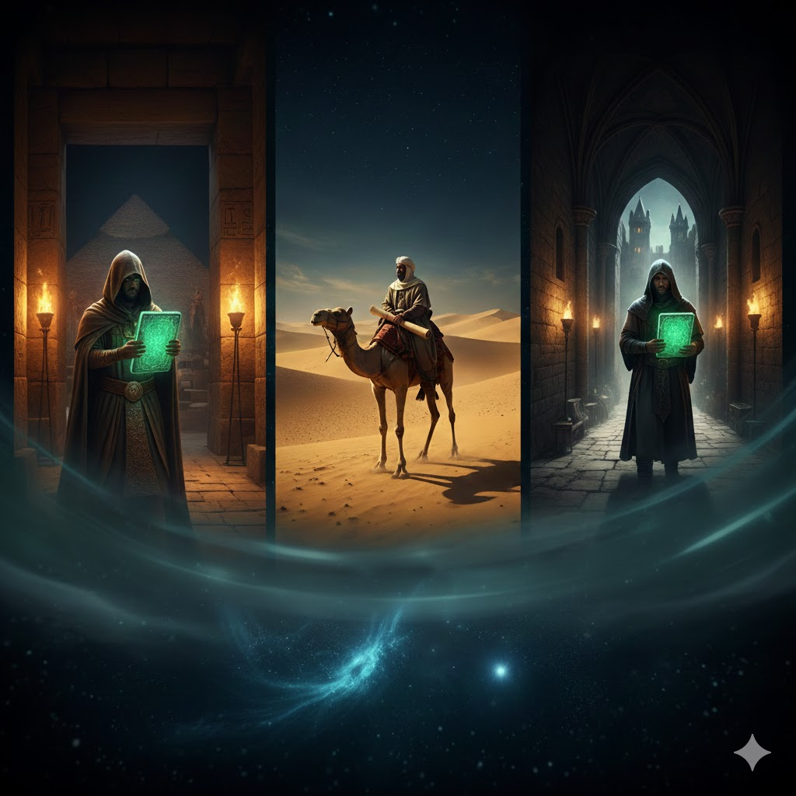
Legend has it that these tablets migrated from one civilization to another in a sovereign chain of succession, eventually reaching the Egyptian Priests. They guarded them with absolute secrecy, regarding them as the "Supreme Secret" accessible only to their highest initiates. Over time, these codes began to emerge within Hellenistic Philosophies under the name of "Hermes," later transitioning to shine within Arabic Texts during the Golden Age of Science. There, Arab scholars decoded and integrated them into alchemy and mysticism, allowing them to become the hidden engine behind the renaissance of the human intellect.
In the Emerald Tablets, Thoth describes a cosmic war that erupts when humanity reaches a technological zenith: conquering the oceans with advanced navigation, flight in the atmosphere, and the harnessing of lightning (manifested today in climate control technologies like HAARP). The prophecy claims this war will annihilate half of mankind using weapons fueled by "Dark Forces"—energies that transcend nuclear power to touch upon "Dark Matter physics" and scalar weaponry. It is a celestial and terrestrial war alike, a clash between blind technology and enlightened spirit, ultimately concluding with the victory of Light and the restoration of cosmic balance.
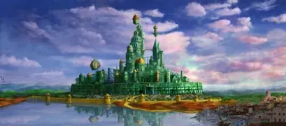
The Emerald City at the heart of Oz is interpreted as a symbolic reference to the Emerald Tablet, representing the sovereign center of knowledge and alchemical transformation. The entire narrative is a metaphor for the Seven Alchemical Operations (such as separation, calcination, and conjunction). The Yellow Brick Road is not merely a path, but the "Golden Way" the initiate traverses toward the Philosopher’s Stone. As L. Frank Baum was a member of the Theosophical Society, he infused Hermetic wisdom into a fictional mold to preserve the "Sovereignty Protocols" from the eyes of the uninitiated.
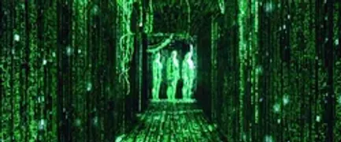
The Green Digital Rain in "The Matrix" is interpreted as a modern visual homage to the Emerald Tablet, where the color green represents "Secret Knowledge" and the alchemical transformation occurring within a virtual world—akin to "Maya" (Illusion) in ancient philosophies. The film portrays the eternal struggle between programmed digital reality and authentic spiritual reality, serving as a cinematic application of the principle "As above, so below." The green code is the "Above" (the programming) that generates the "Below" (the simulation), and true sovereignty lies in the ability to decode and transcend this matrix.
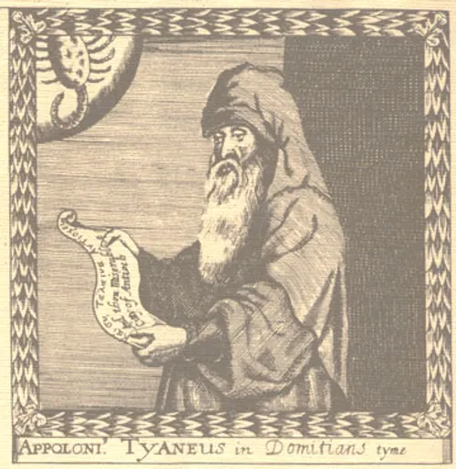
According to Balinas the Wise (Apollonius of Tyana) in his renowned Arabic work "Sirr al-Khaliqa" (The Secret of Creation, circa 6th–9th century AD), the term "Emerald" is not a metaphor but a physical reality. The tablet was literally found in the hands of Hermes, seated upon a majestic golden throne within a hidden vault beneath his statue. Here, emerald is classified as an eternal "Celestial Stone," chosen by the ancients as a repository for wisdom because it is incorruptible and immune to the ravages of time—unlike paper or papyrus which perish—ensuring the "Sovereign Frequency" is transmitted to future generations intact.
The alchemist Ortolanus (14th century AD) perceived the emerald as the ultimate reflection of "Natural Perfection." Grounded in ancient myths, it was believed that the emerald originated from drops of celestial dew that fell and solidified through divine mystery. Consequently, this stone symbolizes the "Secret Sent from Above"; it is less a child of the Earth and more a gift from the Heavens. It descended to carry eternal wisdom within a vessel that combines the clarity of water with the durability of stone, affirming that truth is a "spiritual dew" that crystallizes within the hearts of the enlightened.
The greatness of the emerald lies not only in its physical durability but in its capacity to carry high-level frequencies of extreme precision. These act as an energetic shield, protecting the embedded knowledge from decay or vibrational distortion. Crucially, these tablets were designed to function as "vibrational keys"; upon conscious reading of the texts, the emerald frequencies emanate to activate the spiritual DNA of the seeker. This process unlocks dormant perceptual pathways, transforming the reader from a mere recipient of information into a "sovereign receiver" of cosmic wisdom.
Many sages assert that the choice of emerald was far from coincidental. Just as it has been widely believed since antiquity that emerald possesses a unique power to heal the eyes and provide clear physical vision, the "Emerald Tablets" were designed to grant the soul "Universal Insight" into the mysteries of existence. Here, the emerald functions as a "magnifying lens" for truth; it removes the veil of ignorance from one's spiritual sight, much like it soothes a weary eye. This allows the seeker to perceive the "Hidden Order" behind the chaos of matter, transitioning from limited vision to Comprehensive Cosmic Perception.
described
The First Revision of the Emerald Tablet
Rubric 1: True, without a doubt, correct: Behold,the uppermost is from the lowermost,And the lowermost from the uppermost.
Rubric 2: He made wonders from one,As all things were from one in one order.
Rubric 3: His father the sun,His mother the moon,The wind carried him in her womb,The earth sustained him.
Rubric 4: Father of talismans,Amasser of wonders,Total strength,Fire turned to earth;Separate the earth from the fire!.
Rubric 5: The fine is nobler than the coarse.
Rubric 6: In softness and in wisdom,He will ascend from earth to heaven,And will descend to earth from heaven.And in him is the strength of the uppermost and the lowermost,For with him is the light of lights,Thus the tenebrosity flees from him..
Rubric 7: Strength of strengths!He will prevail over every fine thing,And will enter every coarse thing..
Rubric 8: Upon the creation of the macrocosm the work is done.
Rubric 9: In this, my pride,And thus I am named Hermes,the threefold of wisdom..
The tablets are considered immortal, resistant to all known elements and substances; their atomic and cellular structure is fixed, undergoing no change, which fundamentally violates the Physical Law of Ionization. Engraved upon them are characters—believed by some to be Atlantean—that act as psychic interfaces. These characters respond to tuned thought-waves, releasing the associated mental vibration directly into the reader's mind. This transforms the act of reading into a frequential download of pure consciousness.
The tablets are fastened together with hoops of a golden-colored alloy, suspended from a rod of the same material; this is the extent of their simple physical appearance. However, the wisdom contained within them forms the bedrock of all Ancient Mysteries. For those who read with "open eyes and an open mind," their wisdom shall increase a hundredfold, through a direct connection with the frequencies stored within the emerald and the gold.
Research
Beginning in the 12th century, Latin translations—most notably the widespread "Vulgate"—introduced the text to Europe, where it garnered intense academic interest. Medieval commentators, such as Hortulanus, interpreted it as a "foundational text" for alchemical instructions aimed at producing the Philosopher's Stone and creating gold. During the Renaissance, interpreters increasingly read the text through Neoplatonic, allegorical, and Christian lenses, while printers associated it with emblems viewed as visual representations of the tablet itself. This journey culminated in the appearance of vernacular translations, such as the English version prepared by Isaac Newton.
Towering figures of science and philosophy, including Isaac Newton, Roger Bacon, Athanasius Kircher, and John Dee, all dedicated extensive research to the Emerald Tablet. Opinions remain divided; while some believe it holds the "secret key" to unlocking alchemical processes and the transmutation of matter, others dismiss it as a mere "hoax" or a pseudepigraphal work. This divergence of thought reflects the eternal struggle between pure materialism and the quest for "Great Cosmic Laws" that bind the energy of light to the structure of matter.
The Emerald Tablet is supposedly an ancient Hermetic artifact translated approximately 1,500 years ago; however, some bold claims—such as those by Dr. Michael Doreal—push its origins back 36,000 years. Although no physical evidence of the tablet has been recovered, its Hermetic teachings remain vital as allegories pertaining to the nature of reality. Throughout history, legendary figures have retranslated these texts over and over, striving to decode the "source code" of the universe
Spiritual and psychological analysts view the Emerald Tablet texts as essence of "Pure Pharaonic Egyptian Mysticism." Their profound meanings do not target the manipulation of external matter, but rather seek an "Alchemy of the Soul"—transforming human consciousness from a limited, material state centered on the "Narrow Ego" into a Pure Cosmic Consciousness. The ultimate goal is spiritual transcendence and achieving "Oneness" with the Creator and the Universe, where the individual becomes a clear mirror reflecting Divine Light without distortion or refraction
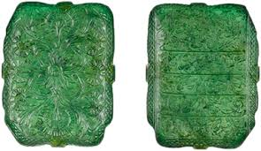
Emerald is characterized by its extreme hardness and resistance to decay, making it the ultimate symbol of the eternal continuity of knowledge. Within the profound alchemical context, the emerald represents the process of "transformation from raw matter to perfection"; it embodies the path consciousness traverses to evolve from its dense state (like lead) into its pure, luminous state (like gold). The stone's durability ensures the survival of the "Code" through the ages, while its green hue signifies the "Everlasting Life" that springs from the heart of solid matter once it achieves perfection.